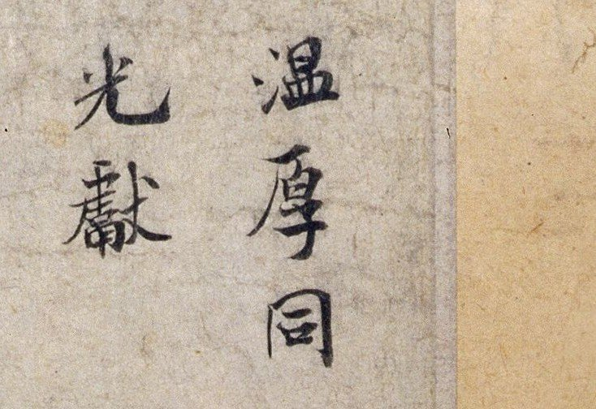
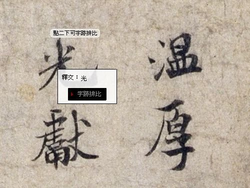
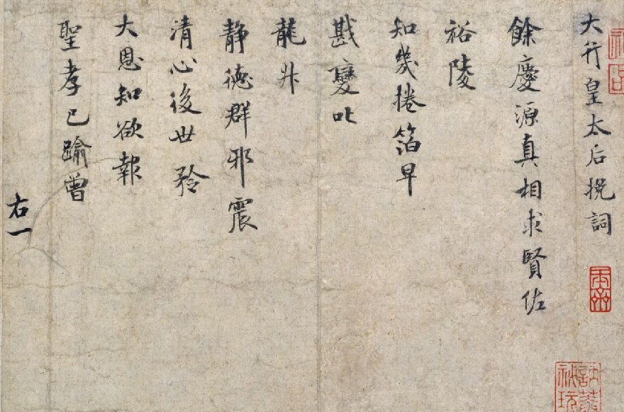
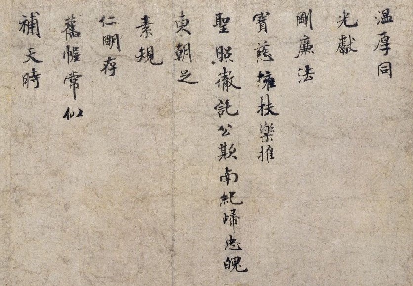
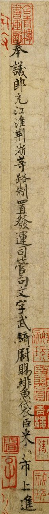

故宮網站：米芾的書畫世界
絕對是書法同好不可不逛的站！
http://tech2.npm.gov.tw/mifu/
這個超炫的網站曾經榮獲2007年美國博物館協會
American Association of Museums
繆思獎 線上展覽 之 金牌獎
Muse Award Winners: Online Presence
GOLD: The Calligraphic World of Mi Fu's Art
National Palace Museum, Taiwan
http://www.mediaandtechnology.org/muse/2007_onlinepresence.html
網站中的圖檔解析度極佳，令人瞠目結舌，而且，還是彩色的哩！

圖片放大到最大時，在某個字上點兩下，可進入「字跡排比」功能：

您會看到米南宮不同書跡中的同一個字；點選其中任何一字，又會跳到該書跡的大圖中...我把這張圖縮得很小；網站上的解析度可沒那麼差勁哦！
真是美不勝收，如夢似幻般的美好網站啊！
接下來三個圖檔，是由網站擷取下來的低解析度圖檔，建議在故宮的網站上放大了看，實在迷人，效果優於手頭上所有字帖！


